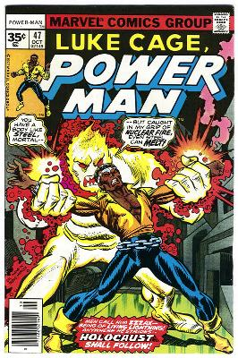

|
powerman
is free UNIX/Linux software that controls (remotely and in parallel) switched
power distribution units.
powerman is suitable for remote operation of Linux systems in a data center or compute cluster environment. (See conman for complementary serial console management) powerman can be extended to support new devices using an expect-like scripting language. powerman can use ethernet, serial, or pipe connections to communicate with remote power contorollers or power control daemons such as ipmipower from FreeIPMI. See SourceForge summary page for downloads, mailing list, etc.. |
 |